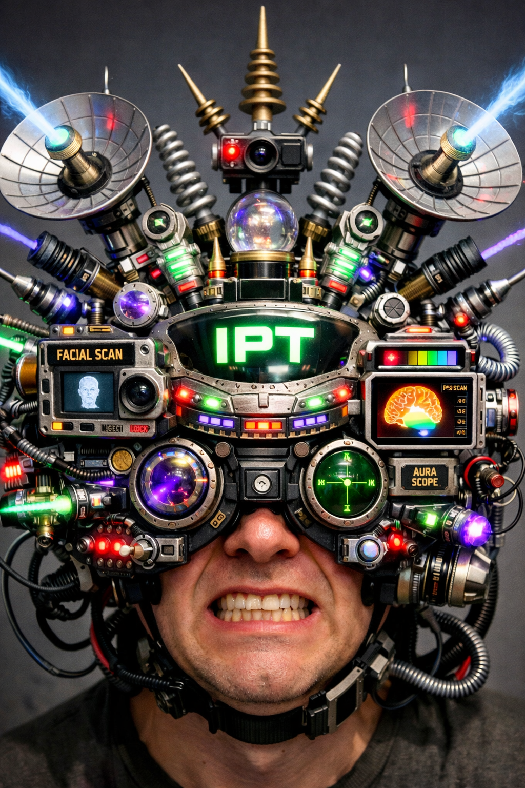

The system didn’t disappear.
You just learned how to see it.
This is what comes back with you.
You begin to notice patterns beneath content.
Not: “Do I agree with this?”
But: 👉 “What is this doing?”
Different message. Same structure.
You notice how fast a reaction is trying to form.
Fast doesn’t mean true.
Fast means something is pushing.
Before naming it… you see it.
Before: “this is good / bad / wrong / right”
There is: 👉 raw signal
The moment you label it… it starts to own you.
You can feel the story being built in real time.
This isn’t just information.
It’s a guided path.
You recognize when something is trying to feel personal.
This isn’t connection.
It’s positioning.
You see the cycle before you enter it.
You’ve seen this ending before.
You notice the moment something tries to become “you.”
If you attach too fast… you’re inside it.
You sense when something has been repositioned.
Meaning changes when placement changes.
You can feel what’s yours… and what isn’t.
Not every feeling is yours to carry.
You understand what happens without reaction.
Silence isn’t absence.
It’s integration.
Before: stimulus → reaction → identity
Now: stimulus → recognition → choice
Nothing was added to you.
Nothing was installed.
You just stopped auto-loading the system.
And once you see it…
…it doesn’t fully disappear again. 🌊